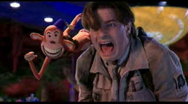

| Monkeybone
(SE) /B+,A |
| Fox/2001/100/ANA 1.85 |
Monkeybone is a highly original fantasy comedy with lots of dark visual stylization.
The comic strip and television character Monkeybone is
the comic creation of cartoonist Stu Miley, a lascivious furry figment of his imagination. Miley's monkey is a foul-mouthed lecherous cartoon
nasty. The
monkey is a riot. Stu is only a few monkey hairs short of his creation's zaniness.
On the evening of the cocktail party celebrating the success of Miley's
creation, Stu has a surprise planned for his girl friend Julie McElroy. It's time to pop the big
question, but given Miley's imagination, it can't be done in any typical fashion. Fate intervenes
before Stu can secure a "yes" from Julie and he winds up reconnoitering the ins and outs
of a world only possible in his fertile imagination., "Downtown." While Stu meets a live
Monkeybone under very stressful circumstances, it's left to Julie to battle for Stu's survival in
another venue.
The two worlds of Monkeybone come to crashing comic collision in a wild conclusion
worthy of madcap comedy's best.
The guy loosing his guts all over the place will tie your stomach in a convulsive know. The
Museum fund-raiser hosted by an obnoxious incarnation of Miley is a fas.
 |
| Stu meet Monkeybone! ©Fox |
Director Henry Selick's previous film forays have included direction of
two animated films, the dark and entertaining Nightmare Before Christmas and several years
later in 1996 James and the Giant Peach. Monkeybone combines live action and animation
to dazzling effect. Miley’s sojourn in Downtown, a way station before life and death, is fascinating.
The outrageous behavior may not be to everyone's taste and, trust me, the smut meter is cranked up big time. Selick
masters the art mixed elements combining charm and noxiousness into a hilarious chemical explosion.
The
creature design is amazing. The overall production design is pure joy. Monkeybone basks in its own
imaginative style and draws pleasure from its most twisted character elements.
Brandon Fraser is the guy with the imagination. Fraser is totally home in
over-the-top screwball roles. He makes Miley more than just cardboard. Bridget Fonda is
Miley's faithful fiancée and Whoopee Goldberg gets to lend her smile to Death. Dave Foley is
effectively cast int he role of Miley's manager. With a little help from magic purple dust, Foley
runs joyously amok.
This is an excellent special edition featuring thoughtful commentary from
director Henry Selick who providing many technical details. There are extended scenes included, a
deeper look at Monkeybone special effects and several TV spots and a theatrical trailer.
It's a stunner of a DVD. Join Miley's tour of the nether world highlighted by glossy
blacks, intense color and details sharp enough to conjure up some original nightmares of your own.
Every detail of the make-up and production design is revealed for precise scrutiny. The museum
party is a wonder of brilliant color with a perfect sampling of purple dust. Face tones are dead
on, shadow detail in perfect balance. Monkeybone has theatrical impact to spare. Very active
and exciting surround sound is offered up in DTS or Dolby Digital 5:1 completes the package.
|
|
|
|

Selections from the Feature Archive include articles on
Akira Kurosawa, Blonde Bimbos,
Frank
Darabont, Steven Culp,
John
Herzfeld or Vietnam: The
Hollywood Pariah, and many more....
Director Walks the Wire
Balanced by an armor of movie lore and filmmaking daring, director John Herzfeld is comfortable
walking the high wire. Check out this interview by Stu Kobak.

 Gary Morris's insightful publication Bright Lights
Film Journal turns the celluloid in films from a unique perspective. Click on the image above
for more pure movie views. Gary Morris's insightful publication Bright Lights
Film Journal turns the celluloid in films from a unique perspective. Click on the image above
for more pure movie views.
 Sight and Sound Magazine is the venerable voice of The British Film
Institute. The site includes articles and film reviews. A great resource in print and on the
Internet. Sight and Sound Magazine is the venerable voice of The British Film
Institute. The site includes articles and film reviews. A great resource in print and on the
Internet.

The National Film Preservation Foundation (NFPF) is the nonprofit organization created by the U.S. Congress to save
America's film heritage.
 Have you visited Home Theater
Talk lately? One of the friendliest places on the Net for Home Theater and DVD discussion, you
can get help for installation problems or simply share your opinions with other Vidiots. Have you visited Home Theater
Talk lately? One of the friendliest places on the Net for Home Theater and DVD discussion, you
can get help for installation problems or simply share your opinions with other Vidiots.

ISF Monitor Calibrations in the
Tristate New York area. Lots of hardware info and frequent hardware peaks from video expert Kevin
Miller.They may be judgmental, but that's the point, isn't it. Lots of DVD reviews plus news and
more.

The Movie Poster
Archive includes extensive poster images from the films of stars like Susan Hayward, Kirk Douglas,
Katharine Hepburn and many more. Our
featured star is Edward G. Robinson
|